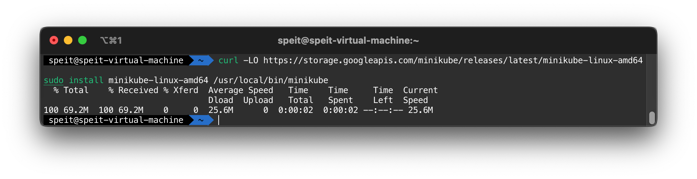
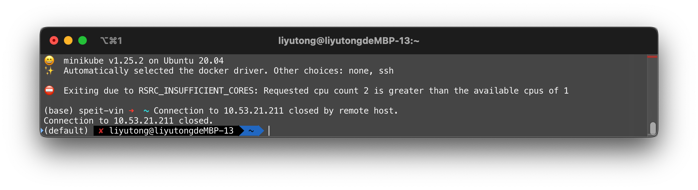
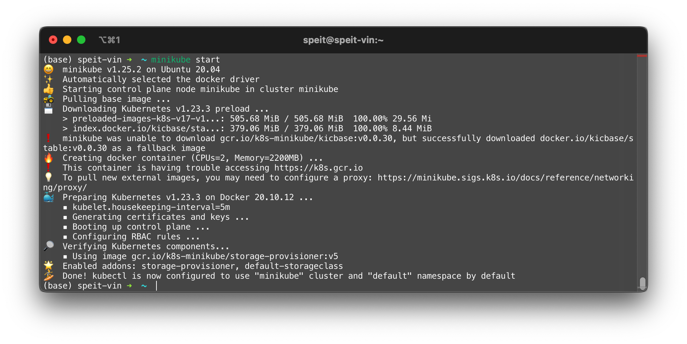
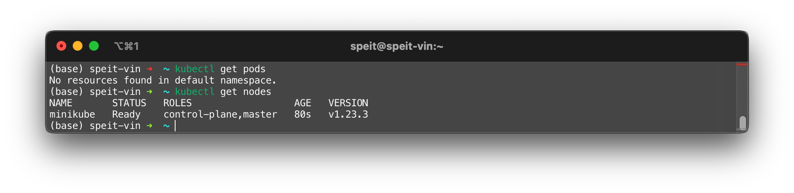
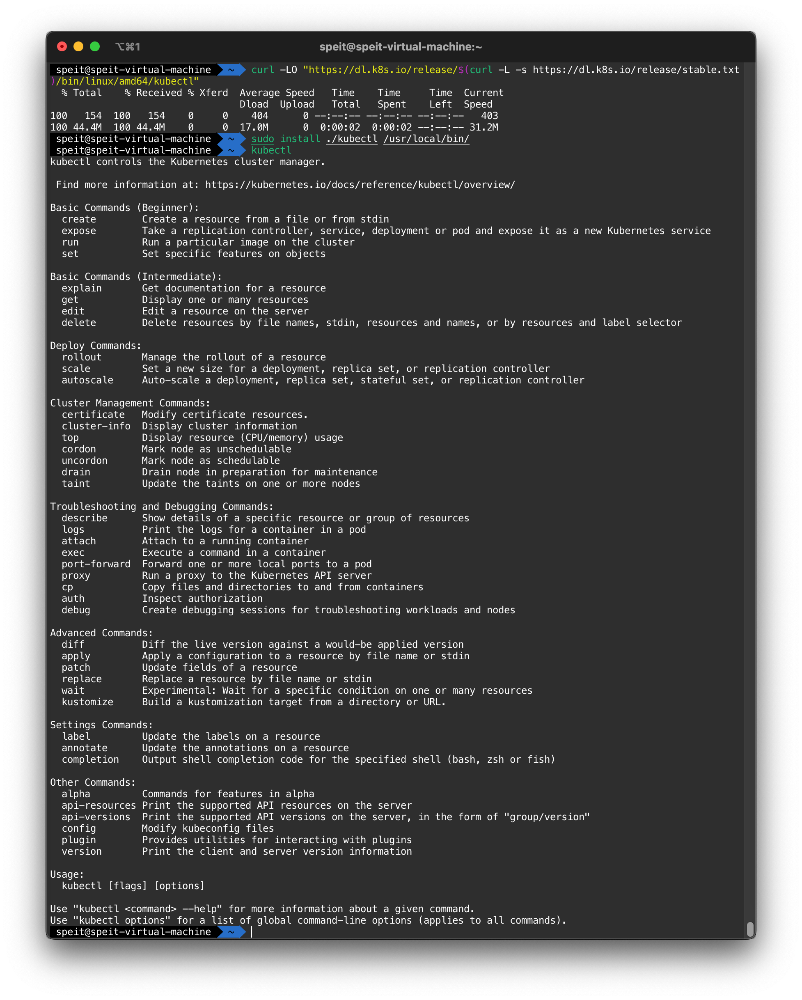

安装Minikube
如果只是学习API使用，安装Minikube是个很好的方法
安装本体
二进制安装
curl -LO https://storage.googleapis.com/minikube/releases/latest/minikube-linux-amd64
sudo install minikube-linux-amd64 /usr/local/bin/minikube
Note
minikubu-linux-amd64 代表该minikube是为amd64平台编译的，只能用于amd64平台 Minikube start 可以获取全平台安装的可执行文件

Tip
如果要删除安装的Minikube，需要使用sudo rm /usr/local/bin/minikube删除可执行文件
DPKG 安装
与二进制安装类似
curl -LO https://storage.googleapis.com/minikube/releases/latest/minikube_latest_amd64.deb
sudo dpkg -i minikube_latest_amd64.deb
Tip
如果要删除安装的Minikube，需要使用相应的dpkg命令卸载
如果想为Minikube添加终端的自动补全，可以执行如下命令
Tip
可以通过echo $SHELL判断当前的Shell类型。Ubuntu默认使用的是Bash；最近的MacOS默认使用的是Zsh。
Minikube 启动与停止
启动
Tip
如果出现连接问题导致无法下载镜像的问题，可以添加--image-repository参数执行镜像
当前一次minikube start失败的时候，需要输入minikube delete删除minikube容器并且删除~/.minikube文件夹
Note
Minikube 要求硬件必须满足
- 2 vCPU
- 2 GB RAM
单核心的VPS，小内存的VPS是无法启动Minikube进行实验的

首次启动集群时，该命令会运行较长时间。这是因为要下载本地不存在的镜像。

集群启动后，可以使用kubectl工具检查集群。kubectl是K8S集群的管理工具。其安装教程在下一个章节

停止
停止的命令非常简单
安装kubectl
Minikube 只负责启动k8s实验集群，还需要安装kubectl工具管理，或者使用minikube自带的kubectl工具管理。
Minikube 自带的kubectl可以通过如下命令调用：
该命令等同于
Tip
你可以在终端配置文件中为该命令起一个别名，例如alias kubectl="minikube kubectl --"
若要安装kubectl则需要执行下列命令
curl -LO "https://dl.k8s.io/release/$(curl -L -s https://dl.k8s.io/release/stable.txt)/bin/linux/amd64/kubectl"
sudo install ./kubectl /usr/local/bin/ # Use install command to replace move
Note
这样安装的是最新的stable release，而curl -L -s https://dl.k8s.io/release/stable.txt被用来获取版本号
Warning
kubectl需要从dl.k8s.io下载。该过程可能会遇到连接问题，因此，可以通过任何渠道获取该二进制文件，上传/拷贝到实验环境中进行安装
如果想为kubectl添加终端的自动补全，可以执行如下命令
